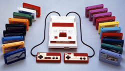
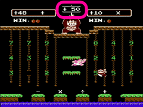
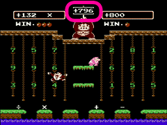

|
2006年12月号に引き続き、今号でもバーチャルコンソールの紹介をしたいと思います。今回は編集長オススメのソフト、先月に配信が開始されたばかりの『ヨッシーのたまご』と『ドンキーコングJR.の算数遊び』の2本をご紹介。どちらのソフトも非常に対戦の面白いソフトです。今後も不定期ですがバーチャルコンソールソフトを取り上げていきますね。 |
|
次に紹介するソフトはファミコンソフト『ドンキーコングJR.の算数遊び』です。発売日は1983年12月12日。同年7月15日に発売されたファミコンソフトの『ドンキーコングJR.』に登場するキャラクターたちや操作感をベースに、「算数を楽しもう」というゲームです。ひと月ほど前の1983年11月22日には、英語の勉強が楽しめる『ポパイの英語遊び』というソフトも発売されていて、20年以上も前から現在のＤＳソフトに通じるような、楽しみながら学ぶゲームがあったんですね。
この『ドンキーコングJR.の算数遊び』ですが、「算数のゲーム＝勉強＝つまらない」なんて思われる方もいらっしゃるかと思いますが、食わず嫌いかも知れませんよ。
|
初めての方にはCALCULATE（計算）のAがオススメです。このモードでは、画面真ん中の上の方にいるドンキーコングが出す数字（目標の数字）になるように計算します。画面上には1〜9までの数字と＋−×÷の計算記号が配置されているので、ドンキーコングJR.を動かしてそれらを集めていきます。例えば答えが「50」なら、「7」→「×」→「7」→「＋」→「1」の順に取れば正解です。「8」→「＋」→「2」→「×」→「5」でも正解ですし、答えを導く式は幾通りも存在します。出題される目標の数字は２桁で、基本的に足し算がわかれば遊べるので、小学1年生くらいから十分に楽しめます。小さいお子さんをお持ちの皆さま、このゲームを使って一緒に遊んでおけば、算数の得意な子供になる可能性も。 |
|
このゲーム、算数を覚えたての子供さんだけでなく大人の方同士でも楽しめます。2人対戦が可能で、ルールはそのまま、ドンキーコングの出す数字になるように、先に計算できた方が勝ちとなります。CALCULATE Aでは簡単に決着がつくので、大人の方にはCALCULATE Bがオススメです。CALCULATE Bでは、ドンキーコングの出す数字が3桁になり、さらにマイナスの数字が出ることもあります。
さらに0からの計算ではなく、数字が入った状態で始まります。2桁のときはドンキーコングJR.を動かしながら計算できるのですが、3桁になるとやみ雲に計算していってもなかなか目標の数字にたどり着けません。まずはじっくり頭の中で暗算して、それから動くのが得策です。
CALCULATE Bのポイントは割り算を使うこと。CALCULATE Aではあまり使われなかった「÷」が、ここでは非常に役立ちます。例えば目標の数字が「756」、はじめに与えられた数字が「200」の場合、目標の数字に近づけようと「4」をかけてしまうと、「800」から最低5回は引き算しなければならなくなり非効率です。例えばここではじめの数字を「4」で割って「50」にします。数字が小さくなったので不利になると思いきや、次にこの「50」に「5」をかけると「250」、さらに「3」をかければ「750」になり、あとは「6」を足せば目標の数字となり、計算回数が少なくなった分、相手よりも早く目標の数字に到達することができます。（さらに少ない回数でも計算できるのですがここでは秘密にしておきます）
焦らず相手よりも早く計算できた方が勝者となるこのゲーム。脳の活性化に加えて、忍耐力や精神力も鍛えられそうですね。 |
|
|
|